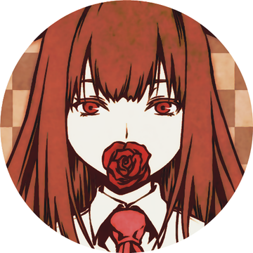
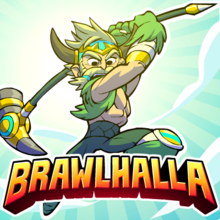

Para falar sobre Hobbies existem diversas coisas que gosto de fazer em meu tempo livre, então irei começar pelo hobbie que me acompanha a mais tempo, que é a LEITURA. Desde criança eu gostava de ir à biblioteca da escola pegar livros emprestados e gastar várias horas do dia lendo. Meus livros e sagas favoritos são: Sherlock Holmes, escrito por Conan Doyle, As Crônicas de Nárnia e Além do Planeta Misterioso, escritos por C.S. Lewis, além de muitos mangás como Noragami de Adachitoka e HQ's da Miss Marvel, personagem da Marvel.
Outro hobbie que sou apaixonada está relacionado com a MÚSICA e a DANÇA, em que cheguei a fazer aulas de canto e guitarra para despertar mais desse amor. Outra questão ligada à esse hobbie é que me deixo levar tanto pela música que fiz aulas de dança dos 8 aos 12 anos, e além disso, atualmente tenho utilizado de plataformas como o YouTube e jogos como Just Dance para aprender coreográfias.
Para finalizar um pouco sobre meus hobbies é que sou apaixonada por JOGOS. Desde muito nova eu tive influências dos jogos na minha vida, em que vi diversas vezes meu pai jogar o aclamado Medalha de Honra, e em outras situação meu irmão mais velho jogando jogos de todos os tipos. Atualmente desenvolvi meu próprio gosto pelos games, gostando principalmente de jogos MOBA, para estar com os amigos, além de jogos de RPG, em que posso fazer a boa e velha jornada do herói.